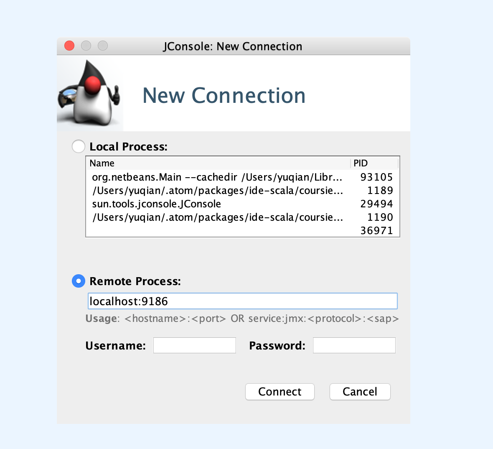
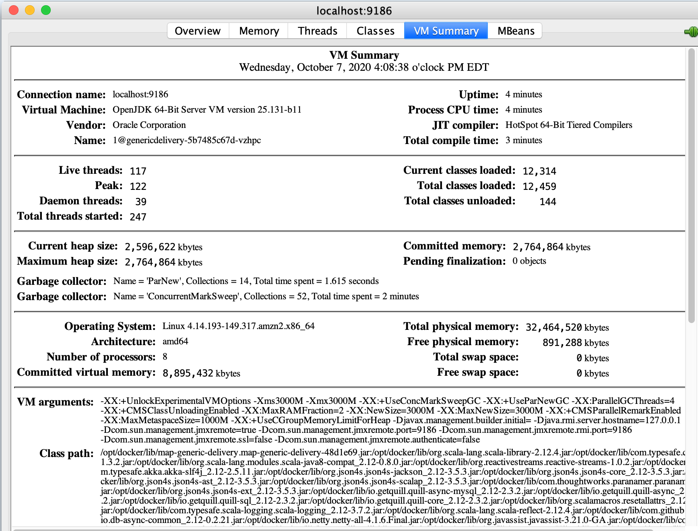
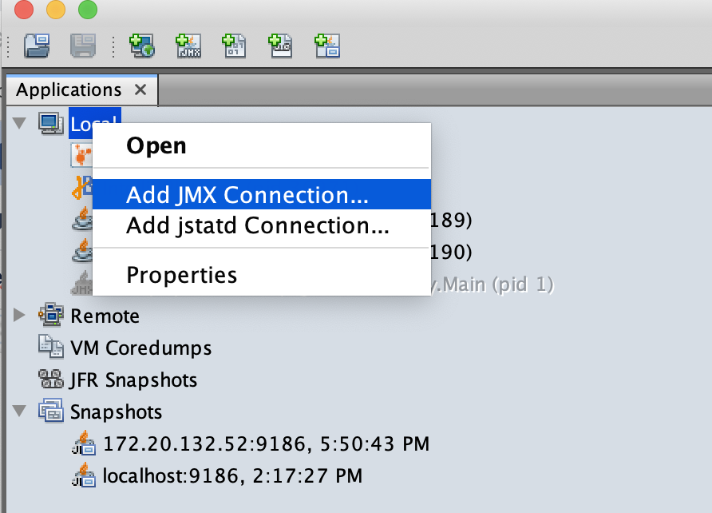
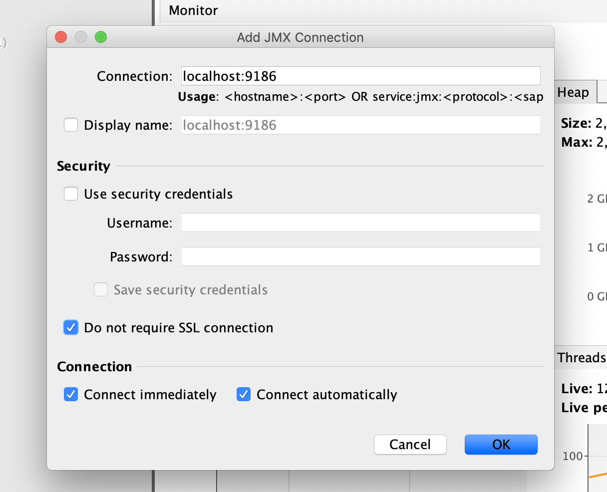

Java Management Extensions (JMX) is a Java technology that supplies tools for managing and monitoring applications, system objects, devices (such as printers) and service-oriented networks. Those resources are represented by objects called MBeans (for Managed Bean).
In this blog, I will show the steps to enable it for Scala/Sbt project and also show how to connect VisualVM to a remote server
Prerequisite
Follow the link below to install VisualVM: https://visualvm.github.io/.
If you don’t want to use VisualVM, Jconsole is an option too.
Setup sbt project with JMX
Enable jmx settings in build.sbt
1 | javaOptions in Universal ++= Seq( |
Note: if you are adding JVM settings here, you need to prefix with -J, eg,
1 | "-J--Xmx3000M" |
With this configured and if you run your program locally, jconsole and VisualVM can auto detect running processes already.
Setup for remote access
If you want to to debug service running on a remote server. e.g staging environment. you will need to expose the jmx port at the same time.
Below instructions are based on a helm chart context, since all our services are deployed to EKS through helm chart.
Add ports to Service
1 | apiVersion: v1 |
Add ports to deployment.yaml
Under, Deployment.spec.template.spec.containers
1 | ports: |
Finally, you can provide the port number for different envs in Values.yaml
1 | container: |
Start port forwarding after service deployed to EKS
1 | kubectl port-forward -n [namespace_name] service/[app_name] 9186:9186 |
Visualize with jconsole
Start jconsole in command line easily with
1 | jconsole |
Add Connection

View Metrics

Visualize with VisualVM
Add JMX Connection

Input JMX Connection

Start exploring
Click ok button, wait for a second, then you should see:

Start to exploring more data

Tuning JVM parameters
If you want to test different JVM settings, this can be done in helm chart Values.yaml:
1 | - key: "JAVA_OPTS" |
This can be added in build.sbt as well, but it loses the flexibility to tune them for different environments e.g staging, performance, production.